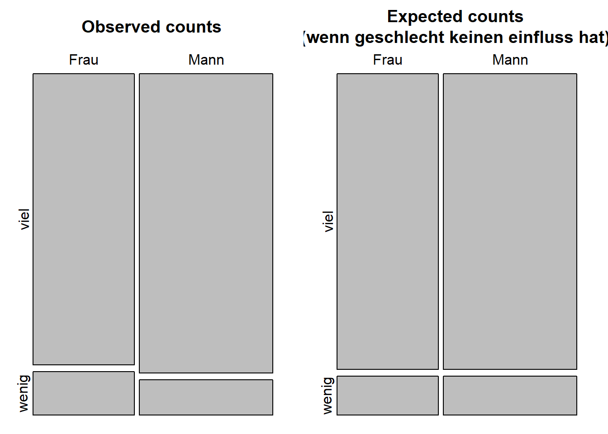
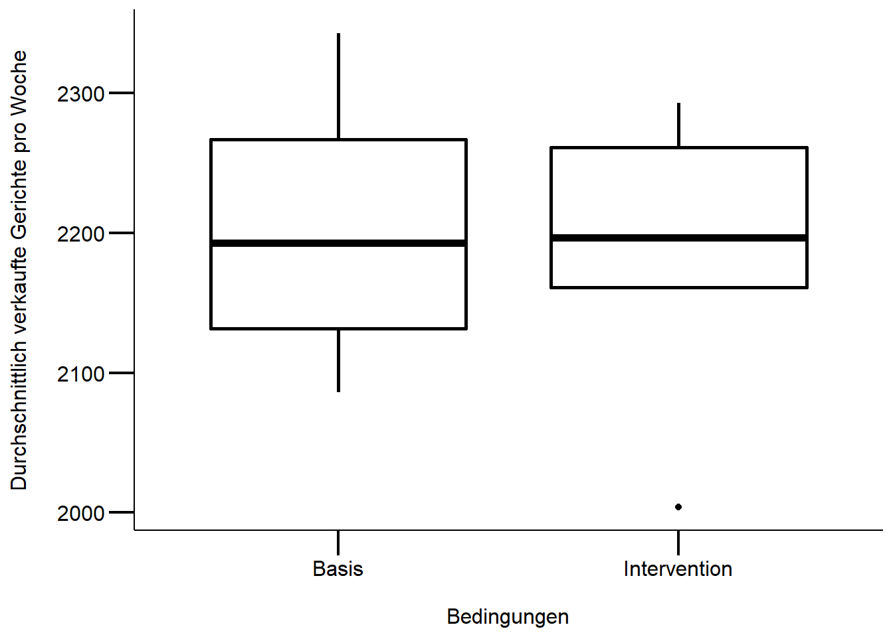

Stat1: Lösung
Musterlösung Übung 1.1
Download R-Skript
Kommentierter Weg
Lade Daten von der Gästebefragung 2017 herunter (für Informationen zu den einzelnen Variablen, siehe diesen Link):
- 2017_ZHAW_aggregated_menu_sales_NOVANIMAL.csv
- 2019_ZHAW_vonRickenbach_cleaned_recorded_survey_dataset_NOVANIMAL_anonym.csv
nova <- read_delim(file = "data/2017_ZHAW_aggregated_menu_sales_NOVANIMAL.csv", delim = ";")
nova_survey <- read_delim(file = "data/2019_ZHAW_vonRickenbach_cleaned_recorded_survey_dataset_NOVANIMAL_anonym.csv", delim = ";")#überprüfe die Datenstruktur
glimpse(nova_survey)Rows: 1,175
Columns: 71
$ Pseudonym <chr> "2017_HS_F_0001", "2017_HS_F_0007", "2017_HS_F_000…
$ meal <chr> NA, "Favorite", "Favorite", "Favorite", "Favorite"…
$ choice_1 <dbl> 4, 4, 3, 4, 3, 3, 4, 4, 3, 3, 3, 3, 4, 4, 4, 2, 3,…
$ choice_2 <dbl> NA, 4, 1, 1, 3, 2, 1, 2, 2, 3, 4, 3, 4, 4, 4, 2, 1…
$ choice_3 <dbl> NA, 4, 4, 4, 4, 4, 3, 4, 3, 3, 4, 3, 4, 4, 4, 2, 4…
$ choice_4 <dbl> NA, 4, 2, 4, 3, 3, 4, 4, 3, 3, 4, 3, 4, 4, 2, 4, 4…
$ choice_5 <dbl> NA, 2, 2, 4, 2, 2, 3, 3, 2, 2, 4, 2, 2, 4, 3, 2, 2…
$ choice_6 <dbl> NA, 4, 4, 4, 3, 4, 2, 3, 2, 4, 1, 2, 4, 4, 3, 2, 4…
$ choice_7 <dbl> NA, 2, 1, 1, 2, 1, 1, 1, 1, 1, 1, 1, 1, 2, 1, 2, 1…
$ choice_8 <dbl> NA, NA, 2, 4, 2, 1, 1, 1, 1, 3, 1, 1, 1, 4, 2, 2, …
$ choice_9 <dbl> NA, NA, 1, 1, 1, 1, 1, 1, 1, 1, 4, 1, 1, 4, 1, 4, …
$ choice_10 <dbl> 4, NA, 3, 3, 3, 3, 2, 4, 4, 3, 4, 3, 4, 4, 4, 2, 2…
$ satis_1 <dbl> NA, 3, 3, 3, 4, 3, 3, 4, 4, 3, 4, 4, 4, 4, 4, 4, 4…
$ satis_2 <dbl> 3, 3, 3, 3, 4, 3, 3, 4, 4, 3, 4, 3, 4, 4, 4, 3, 3,…
$ satis_3 <dbl> NA, 2, 2, 1, 1, 2, 2, 1, 1, 1, 1, 1, 1, 2, 1, 1, 3…
$ ing_1 <dbl> 4, 4, 1, 1, 3, 2, 1, 3, 1, 3, 2, 3, 1, 4, 1, 2, 2,…
$ ing_2 <dbl> 3, 2, 1, 1, 4, 2, 1, 2, 1, 2, 1, 2, 1, 4, 4, 1, 1,…
$ ing_3 <dbl> 3, 2, 1, 1, -99, -99, 1, 2, -99, 2, -99, -99, 1, 2…
$ ing_4 <dbl> 4, 3, 4, 3, 3, -99, 4, 4, -99, 3, NA, -99, 3, 4, 1…
$ att_1 <dbl> 4, 3, 3, 2, 2, 1, 2, 3, 4, 2, 1, 1, 2, 4, 2, 3, 3,…
$ att_2 <dbl> 4, 4, 4, 3, 3, 2, 3, 4, 4, 4, 4, 3, 4, 4, 4, 3, 3,…
$ att_3 <dbl> 2, 3, 3, 2, 2, 2, 2, 2, 3, 2, 1, 1, 2, 4, 2, 2, 3,…
$ att_4 <dbl> 4, 3, 4, 3, 3, 2, 3, 2, 4, 2, NA, 2, 2, 4, 1, 3, 4…
$ att_5 <dbl> 4, 4, 4, 3, 3, 2, 3, 3, 4, 2, NA, 2, 3, 4, 1, 3, 3…
$ att_6 <dbl> 1, 2, 4, 2, 1, 1, 2, 1, 3, 2, 1, 1, 1, 1, 1, NA, 4…
$ att_7 <dbl> 1, 2, 1, 2, 1, 1, 1, 1, 2, 2, 1, 1, 1, 1, 1, NA, 4…
$ att_8 <dbl> 4, 4, 4, 3, 3, 3, 3, 4, 3, 3, 3, 2, 4, 4, 1, 3, 4,…
$ att_9 <dbl> 3, 4, -99, 3, 4, 2, 4, 4, 4, 4, 4, -99, 3, 4, 1, 4…
$ att_10 <dbl> 4, 2, -99, 3, 3, -99, 4, 4, 4, 2, -99, -99, 3, 4, …
$ att_11 <dbl> 4, 3, NA, 2, 4, 3, 2, 4, 3, 4, 4, 3, 4, 2, 4, 3, 4…
$ diet <dbl> 0, 1, 0, 0, 0, 0, 0, 0, 0, 0, 0, 0, 0, 0, 0, 0, 0,…
$ allerg <dbl> 0, 0, 0, 0, 0, 1, 1, 0, 0, 0, 1, 0, 0, 0, 0, 0, 0,…
$ relig <dbl> 0, 0, 0, 0, 0, 0, 0, 0, 0, 0, 0, 0, 0, 1, 1, 0, 0,…
$ meds <dbl> 0, 0, 0, 0, 0, 0, 0, 0, 0, 0, 0, 0, 0, 0, 0, 0, 0,…
$ tho_1 <dbl> 4, 4, 3, 4, 3, 3, 3, 4, 3, 4, 3, 2, 3, 4, 2, 3, 3,…
$ tho_2 <dbl> 4, 3, 4, 4, 4, 3, 4, 4, 4, 4, 4, 3, 3, 4, 1, 4, 4,…
$ tho_3 <dbl> 4, 3, 4, 4, 4, 2, 4, 3, 4, 4, 4, 3, 2, 4, 1, 4, 4,…
$ tho_4 <dbl> 3, 3, 4, 4, 3, 3, 4, 3, 4, 4, 3, 3, 3, 4, 1, 4, 4,…
$ tho_5 <dbl> 3, 3, 2, 2, 4, 2, 2, 4, 3, 3, 3, 2, 4, 4, 4, 2, 3,…
$ tra_1 <dbl> 4, 4, 3, 4, 3, 3, 4, 4, 4, 4, 3, 3, 4, 4, 3, 3, 3,…
$ tra_2 <dbl> 3, 3, 4, 4, 3, 3, 4, 4, 4, 4, 4, 3, 3, 4, 1, 4, 4,…
$ tra_3 <dbl> 3, 3, 3, 4, NA, 2, 4, 3, 4, 4, 3, 3, 3, 4, 1, 4, 4…
$ tra_4 <dbl> 4, NA, 4, 4, 4, 2, 4, 3, 4, 4, 3, 3, 3, 4, 1, 4, 4…
$ tra_5 <dbl> 4, 4, 4, 4, 4, 3, 4, 4, 4, 4, 4, 3, 3, 4, 2, 4, 4,…
$ meat <dbl> 6, 6, 4, 4, 4, 4, 5, 5, 5, 3, 3, 3, 5, 5, 4, 3, 1,…
$ milk <dbl> 5, 6, 6, 5, 3, 3, 6, 5, 6, 5, 6, 6, 6, 5, 6, 4, 3,…
$ veget <dbl> 2, 3, 4, 4, 2, 3, 3, 3, 4, 5, 1, 4, 2, 1, 1, 5, 6,…
$ veg <dbl> 2, 2, 2, 2, 2, 2, 2, 2, 3, 3, 1, 1, 2, 1, 1, 3, 4,…
$ pensum <dbl> 5, NA, 4, 2, 5, 5, 3, 5, 2, 4, 5, 4, 4, 4, 5, 3, 1…
$ cant <dbl> 3, 1, 4, 3, 5, 4, 3, 4, 5, 2, 3, 3, 3, 4, 3, 5, 2,…
$ home <dbl> 4, 1, 2, 3, 2, 1, 1, 3, 1, 4, 3, 4, 3, 1, 4, 1, 3,…
$ other <dbl> 1, 1, 1, 2, 1, 3, 1, 1, 1, 1, 3, 1, 3, 1, 1, 2, 1,…
$ gender <chr> "Mann", "Mann", "Mann", "Mann", "Frau", "Mann", "M…
$ member <chr> "Student/in", "Andere", "Mitarbeiter/in", "Student…
$ fill <dbl> 0, 0, 0, 0, 0, 0, 0, 0, 0, 0, 0, 0, 0, 0, 0, 0, 0,…
$ age_groups <chr> "17- bis 25-jaehrig", "26- bis 34-jaehrig", "26- b…
$ mensa <dbl> 1, 1, 1, 1, 1, 1, 1, 1, 1, 1, 1, 1, 1, 1, 1, 1, 1,…
$ sumNA <dbl> 11, 8, 1, 0, 1, 0, 0, 0, 0, 0, 3, 1, 0, 0, 0, 2, 1…
$ perNA <dbl> 2.115385e+14, 1.538462e+14, 1.923077e+14, 0.000000…
$ Verpflegungstyp <chr> "Selbstverpfleger", NA, "Mensagaenger", "Abwechsle…
$ date <date> 2017-10-17, 2017-10-17, 2017-10-17, 2017-10-17, 2…
$ place <chr> "Gr\xfcental", "Gr\xfcental", "Gr\xfcental", "Gr\x…
$ intervention <dbl> 0, 0, 0, 0, 0, 0, 0, 0, 0, 0, 0, 0, 0, 0, 0, 0, 0,…
$ label_content <chr> NA, "Fleisch/Fisch", "Fleisch/Fisch", "Fleisch/Fis…
$ meal_name <chr> NA, "Kalbsbratwurst", "Kalbsbratwurst", "Kalbsbrat…
$ choice_add_d <dbl> 0, 0, 1, 0, 0, 0, 0, 0, 0, 0, 0, 0, 0, 0, 0, 0, 1,…
$ choice_add_v <chr> NA, NA, "Vegi-Men\xfc\x81 \x81berzeugte nicht", NA…
$ code_choice <chr> NA, NA, "Unzufrieden mit Auswahl", NA, NA, NA, NA,…
$ Bemerkungen_d <dbl> 0, 0, 0, 0, 1, 0, 0, 0, 0, 0, 1, 0, 0, 0, 0, 0, 0,…
$ Bemerkungen_v <chr> NA, NA, NA, NA, "Sch\xf6n w\xe4ren mehr regionale …
$ code_zu_Bemerkungen <chr> NA, NA, NA, NA, "regional", NA, NA, NA, NA, NA, "A…## definiert mytheme für ggplot2 (verwendet dabei theme_classic())
mytheme <-
theme_classic() +
theme(
axis.line = element_line(color = "black"),
axis.text = element_text(size = 12, color = "black"),
axis.title = element_text(size = 12, color = "black"),
axis.ticks = element_line(size = .75, color = "black"),
axis.ticks.length = unit(.5, "cm")
)# Als eine Möglichkeit, die Aufgabe 1.1 zu bearbeiten, nehmen wir hier den
# Datensatz der Gästebefragung NOVANIMAL und gehen der folgenden Frage nach:
# Gibt es einen Zusammenhang zwischen Geschlecht und dem wahrgenommenen
# Milchkonsum (viel vs. wenig Milch/-produkte)
# die Variable wahrgenommener Milchkonsum muss
# noch in 2 Kategorien zusammengefasst werden: geringer vs. hoher Milchkonsum
# Variable milk == wahrgenommener Milchkonsum
# alles kleiner als 4 (3 inklusive) == geringer wahrgenommener Milchkonsum,
#alles grösser als 3 (4 inklusive) == hoher wahrgenommener Milchkonsum
nova2 <- nova_survey %>%
filter(gender != "x") %>% # x aus der Variable Geschlecht entfernen
mutate(milkcon = if_else(milk <= 3, "wenig", "viel")) %>%
select(gender, milkcon) %>%
drop_na() # alle Missings können gestrichen werden
# mal anschauen
table(nova2) milkcon
gender viel wenig
Frau 428 64
Mann 580 68#achtung chi_squre erwartet matrix
nova_mtx <- xtabs(~ gender + milkcon ,data = nova2)
# da es in diesem fall keine kriteriumsvariable gibt, fehlt das y sozusagen
#Chi-squared Test
chi_sq <- chisq.test(nova_mtx)
chi_sq
Pearson's Chi-squared test with Yates' continuity correction
data: nova_mtx
X-squared = 1.49, df = 1, p-value = 0.2222#visualisierung
OP <- par(mfrow=c(1,2), "mar"=c(1,1,3,1))
mosaicplot(chi_sq$observed, cex.axis =1 , main = "Observed counts")
mosaicplot(chi_sq$expected, cex.axis =1 , main = "Expected counts\n(wenn geschlecht keinen einfluss hat)")
par(OP)
#Fisher's Test nur mit 2X2 Kontingenztabelle möglich
fisher.test(nova_mtx)
Fisher's Exact Test for Count Data
data: nova_mtx
p-value = 0.1922
alternative hypothesis: true odds ratio is not equal to 1
95 percent confidence interval:
0.536215 1.147939
sample estimates:
odds ratio
0.7842283 
Ergebnisse
Der \(\chi^2\)-Test sagt uns, dass das Geschlecht und der wahrgenommene Milchkonsum nicht zusammenhängen. Es gibt keine signifikante Unterscheide zwischen dem Geschlecht und dem wahrgenommenen Milchkonsum (\(\chi^2\)(1) = 1.49, p = 0.222. Es sieht so aus, dass Männer leicht mehr angeben weniger Milch zu konsumieren (Tabelle 1). Die Ergebnisse müssen jedoch mit Vorsicht interpretiert werden, denn der \(\chi^2\)-Test gibt uns nur an, dass ein signifikanter Unterschied zwischen Geschlecht und wahrgenommener Milchkonsum vorliegt. Um die Unterschiede innerhalb einer Gruppen (z.B. Geschlecht nach Alter) festzustellen bedarf es weiterer Analysen z. B. mit einer mehrfaktorieller ANOVA mit anschliessenden Post-hoc Tests (siehe Statistik 3).
| Geschlecht | wahr. Milchkonsum | absolute Werte | wahr. Milchkonsum (%) |
|---|---|---|---|
| Frau | viel | 428 | 87.0 |
| Frau | wenig | 64 | 13.0 |
| Mann | viel | 580 | 89.5 |
| Mann | wenig | 68 | 10.5 |
Musterlösung Übung 1.2: t-Test
Leseempfehlung Kapitel 2 von Manny Gimond
Null- und Alternativhypothese
\(H_0\): Es gibt keine Unterschiede in den Verkaufszahlen zwischen Basis- und Interventionswochen.
\(H_1\): Es gibt Unterschiede in den Verkaufszahlen zwischen Basis- und Interventionswochen.
# Gemäss Aufgabenstellung müsset die Daten zuerst nach Kalenderwochen "week"
# und Bedingungen "condition" zusammengefasst werden
df <- nova %>%
group_by(week, condit) %>%
summarise(tot_sold = n())
# überprüft die Voraussetzungen für einen t-Test
ggplot2::ggplot(df, aes(x = condit, y= tot_sold)) + # achtung 0 Punkt fehlt
geom_boxplot(fill = "white", color = "black", size = 1) +
labs(x="\nBedingungen", y="Durchschnittlich verkaufte Gerichte pro Woche\n") +
mytheme
# Auf den ersten Blick scheint es keine starken Abweichungen zu einer
#Normalverteilung zu geben resp. es sind keine extremen schiefen Verteilungen
# ersichtlich (vgl. Skript Statistik 2)
# führt einen t-Tests durch;
# es wird angenommen, dass die Verkaufszahlen zwischen den Bedingungen
# unabhängig sind
t_test <- t.test(tot_sold ~ condit, data=df, var.equl = T)
#alternative Formulierung
t.test(df[df$condit == "Basis", ]$tot_sold,
df[df$condit == "Intervention", ]$tot_sold)
Welch Two Sample t-test
data: df[df$condit == "Basis", ]$tot_sold and df[df$condit == "Intervention", ]$tot_sold
t = 0.27168, df = 9.9707, p-value = 0.7914
alternative hypothesis: true difference in means is not equal to 0
95 percent confidence interval:
-115.2743 147.2743
sample estimates:
mean of x mean of y
2203 2187 Methoden
Ziel war es die aggregierten Verkaufszahlen zwischen den Interventions- und Basiswochen zu vergleichen. Die Annahme ist, dass die wöchentlichen Verkaufszahlen unabhängig sind. Daher können die Unterschiede zwischen den Verkaufszahlen pro Woche zwischen den beiden Bedingungen mittels t-Test geprüft werden. Obwohl die visuelle Inspektion keine schwerwiegenden Verletzungen der Modelvoraussetzung zeigte, wurde einen Welch t-Test gerechnet. Zudem muss gesagt werden, dass die Gruppengrösse hier jeweils mit n = 6 (Anzahl Wochen) eher klein ist. T-test liefern dennoch relativ reliable Resultate. Für mehr Infos dazu hier eine Studie.
Ergebnisse
In den Basiswochen werden mehr Gerichte pro Woche verkauft als in den Interventionsowochen (siehe Abbildung 1). Die wöchentlichen Verkaufszahlen zwischen den Bedigungen (Basis oder Intervention) unterscheiden sich gemäss Welch t-Test jedoch nicht signifikant (t(10) = 0.272 , p = 0.791). Die Ergebnisse könnten mit einem \(\chi^2\)-Test nochmals validiert werden, da die Gruppengrösse mit n = 6 doch eher klein ist.